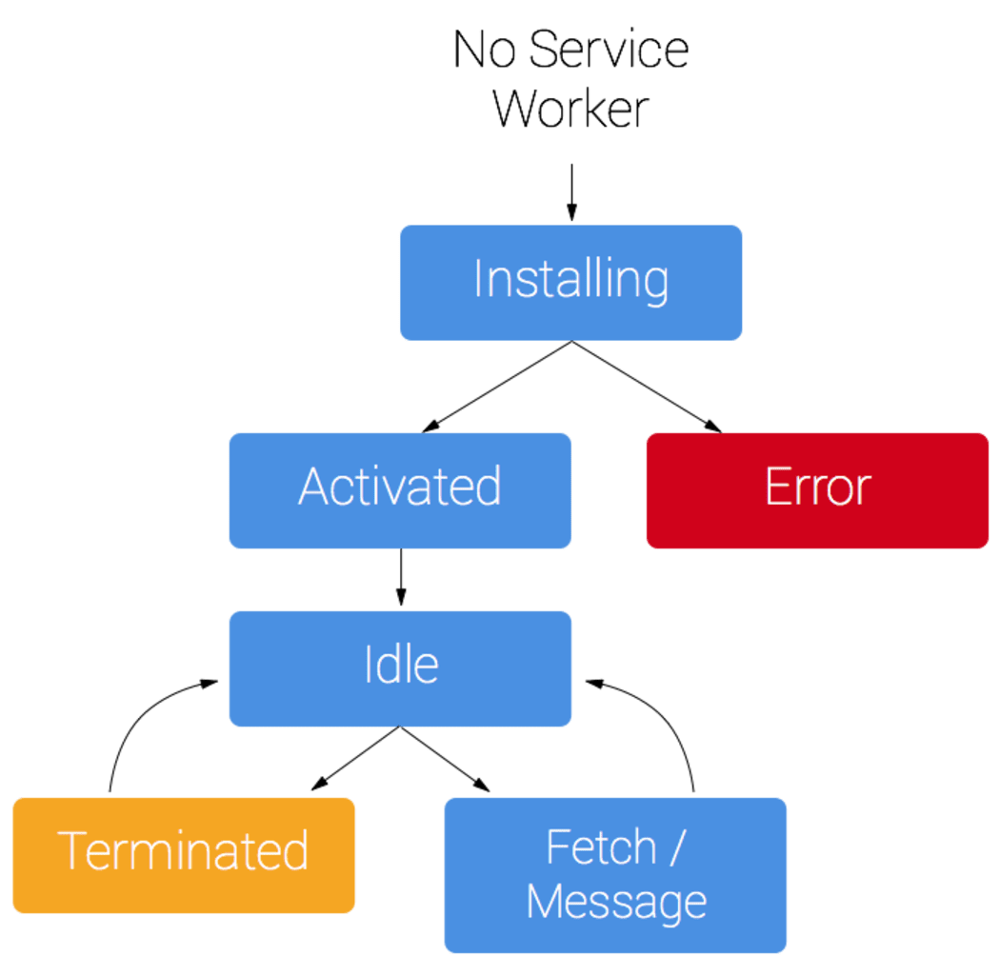

Proof of Concept
Progressive Web App
By Hui Yee Tan
Progressive Web App (PWA)
Use modern web capabilities to deliver fast, engaging and reliable mobile web experience
Neutral to most operating system but dependent to the browser used as it is website based
Features
Work Offline
Response relatively faster by serving pages from cache storage
Use device features such as Microphone, Camera, Location and Background Sync
Send notifications to subscribers
Introducing Service Worker
Service Worker
Service Worker manages how network requests from and to your application are handled
Runs separately from main browser thread in the background, and independent to your web application
Enhance user experience

Lifecycle of the service worker
Business Benefits of PWA
Enhance user experience
Reduce network traffic from and to the server
App can be installed by user, and hence increases user interactions
Limitations
Service worker will only be ready after the first page first loads.
Service worker will be in terminated state when it is not in used.
IndexedDB and localStorage has size limits
Only runs over HTTPS or localhost to prevent man-in-the-middle attack
Challenges